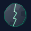

Installe Forge, synchronise les 205+ mods et lance Minecraft en un clic. Aucune configuration manuelle, mises à jour automatiques.
Quand Windows affiche "Windows a protégé votre PC" :
Clique sur "Informations complémentaires" (lien bleu en bas)
Clique sur "Exécuter quand même" — le launcher démarre normalement
Cette étape n'apparaît qu'une seule fois. Windows s'en souvient ensuite.
Petravox.Launcher.exe. Si SmartScreen apparaît, voir la section ci-dessus.
microsoft.com/devicelogin. Ton compte doit posséder Minecraft Java Edition.
srv01.uniheberg.fr:25540 dans Minecraft et connecte-toi !
Les arbres tombent entiers d'un seul coup de hache. Fini de casser bloc par bloc.
NOUVEAUMine un filon de minerai entier en un seul clic. Idéal pour les grottes profondes.
NOUVEAULes deux portes d'une double porte s'ouvrent et se ferment ensemble automatiquement.
NOUVEAUAutomatisation mécanique avec engrenages, convoyeurs et machines à vapeur.
TechnologieSuite industrielle complète : machines, générateurs, outils, armes et armures high-tech.
IndustrieFabrique des outils et armes entièrement personnalisés avec des matériaux combinables.
ArtisanatSystème de magie complet : sorts, livres de sorts, baguettes et classes magiques.
MagieDes dizaines de nouvelles créatures et biomes souterrains uniques à explorer.
ExplorationExplore l'espace, construis des fusées et colonise d'autres planètes.
EspaceSystème de combat dynamique avec esquives, combos et animations fluides.
CombatCuisine enrichie : cultures, recettes, boissons, poissons, desserts et plus encore.
NourritureDonjons gigantesques générés dans le monde, remplis de monstres et de trésors.
DonjonsDes dizaines de nouveaux biomes uniques, de la forêt mystique aux plaines volcaniques.
MondeSacs à dos améliorables avec filtres automatiques, tri et upgrades multiples.
StockageBoss colossaux et dimensions secrètes pour les joueurs cherchant un défi extrême.
Bossimport random sorti de la boucle d'animation (~3 ms économisés par frame)7e72ec82) — l'ancien avait été restreintlauncher_error.log est créé dans %appdata%\.petravox\ — envoie-le à un admin pour diagnostic.%appdata%\.petravox\minecraft\logs\.%appdata%\.petravox\minecraft\ — séparé de ton installation Minecraft normale pour ne pas interférer.launcher_error.log si le launcher est concerné.